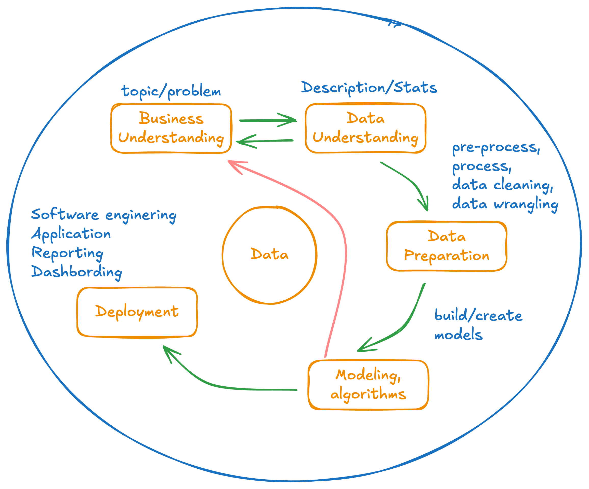
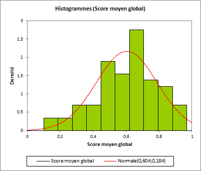
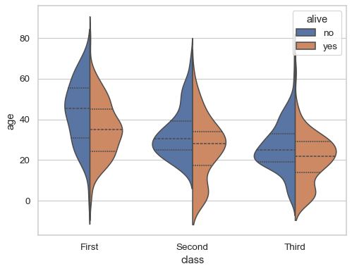
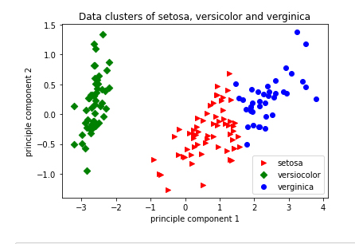
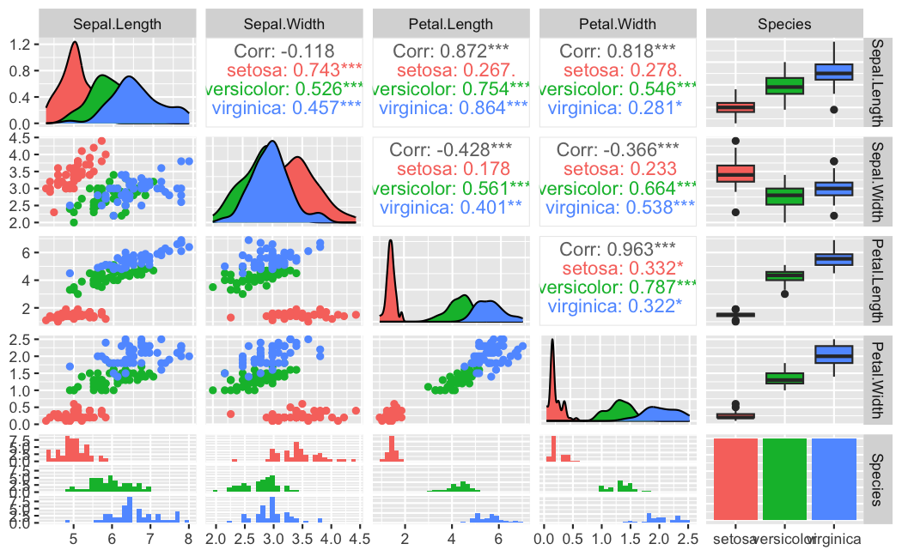

Chapitre 2 : Analyse de données
Avant de fouiller des données, il faut les comprendre. Ce chapitre présente le processus CRISP-DM et l’analyse descriptive (univariée et multivariée).
Objectifs
À la fin de ce chapitre, vous devez pouvoir :
Décrire les étapes du processus CRISP-DM
Comprendre les éléments constitutifs d’un jeu de données (variables, types, taille)
Mener une analyse descriptive univariée et multivariée
Identifier les besoins de nettoyage / prétraitement des données
1. Le processus CRISP-DM
CRISP-DM (Cross-Industry Standard Process for Data Mining) est une méthodologie (cycle de vie) qui décrit les étapes d’un projet de données, de l’objectif jusqu’au déploiement de la solution de décision :
Comprendre le business (l’objectif, la décision visée) ;
Comprendre les données ;
Préparer les données (nettoyage, transformation) ;
Modéliser le problème (choisir ou écrire les algorithmes adaptés) ;
Évaluer ;
Déployer.
{kind=link}

Le cycle CRISP-DM (itératif).
2. Comprendre les données
Variable : une mesure / caractéristique du problème. Pour chacune : sa description, son type (continue/quantitative ou discrète/qualitative), son unité, ses modalités.
Taille de la base : nombre de lignes, de colonnes.
Sources de datasets : UCI ML Repository, etc.
3. Analyse descriptive
3.1. Univariée (variable par variable)
Variable continue : min, max, moyenne, médiane, quantiles, écart-type.
Variable discrète : compter les modalités.
# En R, un résumé rapide :
summary(iris)
3.2. Multivariée (relations entre variables)
Corrélations entre paires de variables.
Visualisations :
Histogramme / densité → évaluer la distribution (suit-elle une loi normale ?).

Boxplot / violin → repérer les valeurs aberrantes.

Scatterplot → repérer des tendances :

2 variables (x, y) : tendance générale (linéaire, non linéaire, aléatoire, convexe/concave) ;
3 variables (x, y + couleur/forme/taille) : groupes (clusters), séparabilité ;
4–5 variables : tendances spécifiques (couleur + forme + taille).
Des représentations plus avancées (coordonnées parallèles, courbes d’Andrews, …).
{kind=link}
{kind=link}
{kind=link}
4. Cas pratique : Iris
Le jeu Iris comporte 5 variables (longueur/largeur de sépale et de pétale + espèce). L’objectif : prédire l’espèce à partir des 4 mesures.
{kind=link}

Analyse exploratoire du jeu Iris.
5. Nettoyage et prétraitement
Avant la modélisation (CRISP étape 3), on prépare les données : traiter les valeurs manquantes et aberrantes, supprimer les doublons, corriger les incohérences, encoder/normaliser/standardiser, créer de nouvelles variables si pertinent.
Exercice
Voir le TP analyse descriptive : récupérez un jeu de données, menez l’analyse descriptive complète et tirez des conclusions à la lumière d’un sujet d’orientation.